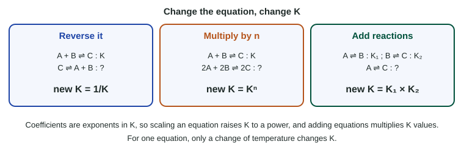

An equilibrium constant belongs to one equation, written one way. Write the equation backward, double it, or add it to another, and K changes in a predictable way. This page gives the three rules and shows why they work. It also nails down the one thing that changes K for an equation that stays the same: temperature.
Three rules

- Reverse the equation: take the reciprocal. For N2O4 ⇌ 2 NO2, K = [NO2]2/[N2O4]. For 2 NO2 ⇌ N2O4, the expression is upside down: K' = [N2O4]/[NO2]2 = 1/K. A product-favored reaction is reactant-favored when written backward.
- Multiply every coefficient by n: raise K to the n. Coefficients are exponents in K, so doubling them squares every term, and K becomes K2. Halving them takes the square root: K1/2.
- Add two equations: multiply their K values. When you add equations, a species that is a product in one and a reactant in the other cancels. Multiplying the two K expressions cancels that species the same way, so K(total) = K1 × K2.
Compare Hess’s law (topic 6.9): there, ΔH values are added when equations are added, and multiplied by n when an equation is scaled. For K, it is one level up: multiply instead of add, raise to a power instead of multiply. The reason is the same in both cases: K is built from products of terms, ΔH from sums.
Worked example. Given (A) N2(g) + O2(g) ⇌ 2 NO(g), KA = 4.5 × 10−31, and (B) 2 NO(g) + O2(g) ⇌ 2 NO2(g), KB = 6.0 × 1013, both at 25 °C. Find K for N2(g) + 2 O2(g) ⇌ 2 NO2(g).
1. Check whether the given equations add to the target as written. A + B: N2 + O2 + 2 NO + O2 → 2 NO + 2 NO2. The 2 NO cancels, leaving N2 + 2 O2 ⇌ 2 NO2. Yes, no reversing or scaling needed.
2. Multiply: K = KA × KB = (4.5 × 10−31)(6.0 × 1013) = 2.7 × 10−17.
3. Interpret: K ≪ 1, so the overall reaction is reactant-favored, even though step B is strongly product-favored.
Worked example. For H2(g) + I2(g) ⇌ 2 HI(g), K = 50.0 at 450 °C. Find K for HI(g) ⇌ ½ H2(g) + ½ I2(g).
1. Reverse: K' = 1/50.0 = 0.0200.
2. Halve the coefficients (n = ½): K'' = (0.0200)1/2 = 0.141.
Order does not matter: halving first gives √50.0 = 7.07, then reversing gives 1/7.07 = 0.141.
What changes K, and what does not
For one equation, written one way, K depends only on temperature. That is the single most important property, and it is where many exam answers go wrong.
| Change | Does K change? | Why |
|---|---|---|
| Adding or removing a reactant or product | No | Q changes; the mixture shifts until Q = K again |
| Changing the volume or pressure | No | Concentrations and Q change, not K |
| Adding a catalyst | No | Both rates rise by the same factor |
| Changing the temperature | Yes | The balance between forward and reverse changes |
| Rewriting the equation (reverse, scale, add) | Yes, by the rules above | It is a different equation, so a different expression |
For N2O4(g) ⇌ 2 NO2(g), Kc rises from about 5 × 10−3 at 298 K to about 10 at 450 K. Topic 7.9 explains which way K moves with temperature and why.